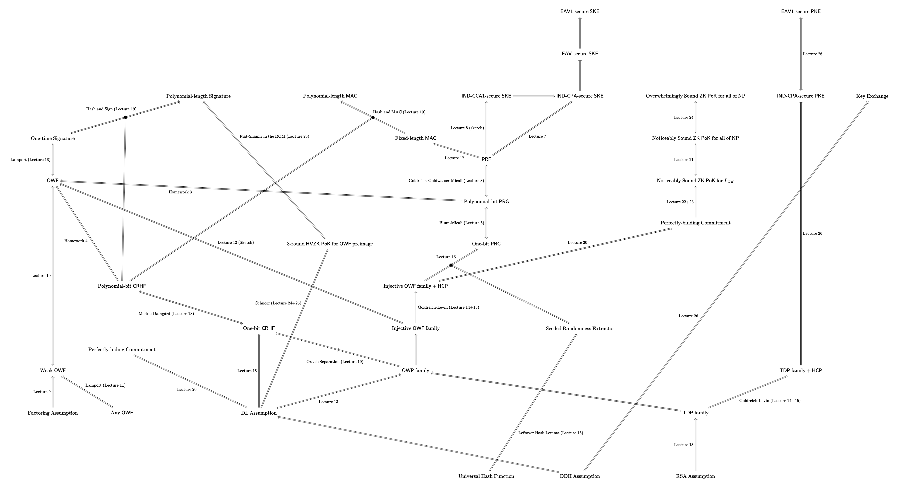

This class is officially complete! The previous version of this website and the policies it contained is available here.
Cryptography is the science of communicating and computing in the presence of an adversary. It uses computational problems that cannot be solved efficiently (or so we believe) as tools to reason about and limit the adversary's power in such interactions. Although cryptography in some guise has fascinated people since ancient times, it has only become a rigorous scientific discipline in the last few decades. Today, it is concerned like no other discipline with rearranging dynamics of (digital) power, and the modern world relies upon it extensively. It protects the most sensitive national secrets and the embarrassing memes you send your friends, yet even the most fundamental question about cryptography remains open: does it exist at all?
This course begins by exploring what kind of security properties are achievable using only probability and information theory, without restricting the adversary's computational power. It then explores the notion of computational hardness and the relationships between a number of fundamental definitions. Finally, it demonstrates the construction of advanced cryptosystems such as fully homomorphic encryption and zero-knowledge proofs using well-studied computational hardness assumptions.
New Professor Disclaimer: This is the very first course I have ever taught, and it is based upon a previous version taught by Wei-Kai Lin. It is likely that the content and structure of this course will change in minor ways over the semester. Such changes will always be made for the benefit of the students, and I will do my best to make it clear when they occur. Prior versions of this website will be retained for your reference. I am eager to hear your concerns and suggestions, which you may communicate to me via email or office hours, or anonymously by sliding a note under my office door. I will do my best to take them into account as the course proceeds. Most importantly, remember that my goal is to impart to you the joy of cryptography. This will be a challenging course, no matter what, but my hope is that you will also have fun, meet interesting people, and in some small way become enlightened.
This course assumes an understanding of basic notions from the theory of computation and complexity theory, such as reductions, decision problems, NP-completeness, computational models (e.g. Turing Machines). It will also be useful to have a basic understanding of probability theory. In the UVa undergraduate program, these prerequesites are provided by CS3120 and either APMA3100 or MATH3100. A course in abstract algebra (e.g. MATH3354 or MATH4652) will also be useful, but is not expected. Students taking this course should be mathematically mature and comfortable both reading and writing formal proofs. Mathematical notation (including potentially new or unfamiliar notation) will be used extensively, and all student work-products will be created using the LaTeX typesetting system, for which no in-class training will be given.
See also the CS department grading guidelines.
Every student must individually write and submit solutions to the homework problems assigned. Students are encouraged to discuss problems with one another and work toward solutions in small groups of their choosing (although you should begin by thinking about the problems on your own). Such groups need not be consistent between different homeworks or even different problems within a homework, but whenever any two students discuss a problem in any substantive way, they must include a written acknowledgement in their homework submissions. While there is no hard limit on discussion group size, groups should generally not be bigger than 4-5 students. The point of homework discussions is to help you understand the material: it is not acceptable to simply swap solutions, and every student should be able to orally explain every solution they submit. It is also permitted to discuss homework problems with people who are not currently in the class, provided a similar acknowledgement is made, but please note that discussion with people outside of the class may deprive people inside the class of your collaboration: therefore, discussion among classmates should be prioritized. If you think that the instructor or TA would refuse to answer a particular question, then you should not seek an answer to that question from any external person (on the other hand, you are free to collaboratively find answers to such questions with other students currently in the class). It is forbidden to seek direct answers to the problems from any person.
Students are also welcome to read published literature or textbooks (or blog posts, or wikipedia, etc...) beyond what is presented or referenced in class, or read lecture notes or watch lecture recordings from other courses, but if this is done in the context of solving specific homework problems, then the sources must be cited in the submitted homework. Lectures, lecture notes, and primary course materials for this course do not need to be cited, nor do discussions that occur during lectures or office hours. Again, the point is to help you understand the material: please do not attempt to find ready-made solutions to the problems online.
For information on the use of AI tools, please see the policies section, below.
Formatting: Homeworks are to be typeset using LaTeX and submitted as compiled PDFs. For each homework, a LaTeX template will be provided below.
| # | Topics | Problems | Answer Template Download | Overleaf Project | Date Due |
| 1 | Prelims, Perfect Security, OTP | PDF Download | Zip Download | Here | 09/18 1:59pm |
| 2 | PRGs, PRFs, CPA-Secure Encryption | PDF Download | Zip Download | Here | 10/09 1:59pm |
| 3 | OWFs, HCPs, Group-based Crypto | PDF Download | Zip Download | Here | 11/06 1:59pm |
| 4 | Hashing, Authentication, IPS, ZKP | PDF Download | Zip Download | Here | 12/09 1:59pm |
Each lecture requires at least one and at most two students to serve as scribes, and all students are required to scribe at least one class. The notes these students (collaboratively) produce will be posted publicly on this website as reference material for the rest of the class. Scribe notes must be typeset using LaTeX, using the template provided below, and the source files must be submitted to the instructor within one lecture week (i.e. at most two lectures) of the date the material was presented. Students are responsible for collaboratively scheduling their own scribing on a first-come-first-served basis, using the google spreadsheet linked in the course's Canvas site. This includes finding another student to cover if a student misses a class they are scheduled to scribe (obviously this doesn't apply in the case of e.g. unforseen medical emergencies).
Formatting: Scribe Notes should be typeset using this LaTeX template, which also requires this preamble in order to compile. When the template and the preamble are compiled correctly, the result should be this PDF. This template is also available as a read-only overleaf project.
Students will complete a final project in small groups (maximum size depending upon the number of students enrolled, likely 2-4). All members of each group will receive the same grade, so long as all members contribute fully to the project. The project comprises reading a research paper in the area of cryptography, writing a 2-page summary, and briefly presenting the paper to the class during the final lectures. Each group will propose their research paper mid-semester. More details, including a list of suggested papers, will be provided at a later date.
There will be 26 lectures (excluding final project presentation days). The following table will track the content and materials for each, and will be updated regularly as lectures occur and scribe notes become available. Unless otherwise noted, it should be assumed that scribe notes have been reviewed and edited by the instructor.
| # | Date | Topics | References | Scribe Notes | Assignments |
| 1 | 08/26 | Introduction, Scope, Security Definitions | [Ps 1.1-1.3], [KL 1.1,1.2,1.4,2.1] | Intro Slides | |
| 2 | 08/28 | Perfect Security, One-Time Pads and their Limitations | [Ps 1.3], [KL 2.1-2.3] | John Berberian, Jr. | |
| 3 | 09/02 | Efficient Computation, Non-Uniformity, Computational Indistinguishability | [Ps 2.1,3.1-3.2], [KL 3.1-3.3] | Christopher Asuncion | HW1 Out |
| 4 | 09/04 | Lemmas about Computational Indistinguishability, Pseudorandom Generators | [Ps 3.1-3.3], [KL 3.1-3.3] | Sabrina Lopez | |
| 5 | 09/09 | PRG Expansion (The Blum-Micali Construction) | [Ps 3.3], [KL 3.3] | William Bradford | |
| 6 | 09/11 | Pseudorandom Functions | [Ps 3.7,3.8], [KL 3.5] | Deebakkarthi Chinnasame Rani | |
| 7 | 09/16 | Chosen Plaintext Attacks; CPA-Secure Encryption | [Ps 3.9,7.1.1,7.1.2], [KL 3.2,3.4,3.5] | Raul Hernandez | |
| 8 | 09/18 | Chosen Ciphertext Attacks, A PRF from any PRG (The GGM Theorem) | [Ps 3.8], [KL 8.5] | Eric Weng | HW1 Due |
| 9 | 09/23 | One Way Functions, Factoring | [Ps 2.2,2.3], [KL 8.1,9.2.3,9.4.1] | Matthew Lucio | HW2 Out |
| 10 | 09/25 | Hardness Amplification for OWFs | [Ps 2.4] [Goldreich 2.3] | Andrew Parkinson | |
| 11 | 09/30 | Universal OWFs | [Ps 2.13] [Goldreich 2.4.1] | Amir Moeini | |
| 12 | 10/02 | OWF Collections, Basic Number Theory | [Ps 2.5,2.6.4], [KL 9.1.1-9.1.4,9.3.1,9.3.3] | ||
| 13 | 10/07 | Discrete Logarithm, RSA, Hard-Core Predicate, A PRG from Certain OWPs | [Ps 2.8-2.10,3.3.3,3.3.4], [KL 8.1.3,8.4.1,9.2.4,9.3.1-9.3.3] | ||
| 14 | 10/09 | An HCP from any OWF (The Goldreich-Levin Theorem) Part 1 | [Ps 3.4.2,3.4.3], [KL 8.3] | HW2 Due | |
| 10/14 | Reading Day. No Class. | ||||
| 15 | 10/16 | The GL Theorem Part 2, Randomness Extractors | [Ps 3.4.2,3.4.3], [KL 8.3], [Vadhan 6.1] | HW3 Out | |
| 16 | 10/21 | Leftover Hash Lemma, A PRG from any Injective OWF | [Vadhan 6.1,6.2], [Goldreich 3.5.1] | ||
| 17 | 10/23 | Authentication, Fixed-length MACs and Signatures | [Ps 5.1-5.3], [KL 4.1-4.3,4.6,13.1,13.2] | ||
| 18 | 10/28 | Lamport Signatures, Collision Resistant Hash Functions, Birthday Attacks, The Merkle-Damgård Theorem | [Ps 5.3-5.5,5.7], [KL 6.1-6.2] | ||
| 19 | 10/30 | Hash and MAC/Sign, Separating CRHFs from OWFs (a high-level view), Commitments | [Ps 5.6, 4.7.1], [KL 6.3.1] | ||
| 11/04 | Election Day. No Class. Bonus Mini-Lecture Online. | ||||
| 20 | 11/06 | Constructing Commitments, Knowledge, Zero-Knowledge, Proofs. | [Ps 4.1-4.3,4.7.1], [Goldreich 4.1-4.3,4.4.1] | HW3 Due | |
| 21 | 11/11 | Interactive Protocols, Zero-Knowledge Proofs. | [Ps 4.4-4.6], [Goldreich 4.2-4.4] | HW4 Out | |
| 22 | 11/13 | Zero-Knowledge Proofs for all of NP Part 1. | [Ps 4.7], [Goldreich 4.4] | ||
| 23 | 11/18 | ZKP for NP Part 2 | [Ps 4.7], [Goldreich 4.4] | ||
| 24 | 11/20 | Composing ZK, Proofs of Knowledge, Sigma Protocols, Special Soundness | [Ps 7.2], [Goldreich 4.3.4,4.7], [Damgård 1-3,6,7] | ||
| 25 | 11/25 | The Schnorr Protocol, The Fiat-Shamir Heuristic, Random Oracles | [Damgård 1,10] | ||
| 11/27 | Thanksgiving. No Class. | ||||
| 12/02 | Project Presentations Part 1. The Inmates Run the Asylum. | ||||
| 12/04 | Project Presentations Part 2. | ||||
| 26 | 12/09 | Project Presentations Part 3. Key Exchange, Public-Key Encryption, Where do we go from here? | [Ps 3.10,7.1.4], [KL 11.3-12.2] | HW4 Due | |
The course map below provides an overview of the various proofs and definitions covered in this course. Note that it maps only things that have been discussed explicitly in the course; many more definitions, implications, and separations are known than these!
Students must adhere to the UVa honor code. It is considered a violation of the honor code if any of the following occur:
It is always forbidden to input any substantive portion of any assignment into any kind of AI resource, and it is always fobidden to incorporate any substantive portion of an AI resources's output into your answers, even if you paraphrase it or rewrite it in your own words. Inappropriate use of AI is an honor violation, and if you are uncertain, do not use it!
As a general principle, if you think that the instructor might refuse to perform a certain task for you or answer a certain question during office hours, then you should definitely not be asking an AI resource to perform the same task or answer the same question. Even if the instructor would answer a particular question, asking an AI might be a bad idea: for example, if you are stuck on a proof, an instructor might give you a hint or suggest a reading, whereas an AI might spit out a full proof (even if you ask it not to do that)!
The above restriction is not an absolute ban on the use of AI resources. You may find them useful for helping you to learn LaTeX (but you should generally be writing the latex code yourself), helping you review the details of a proof you saw in class or understand a concept that we covered, helping you to find additional reading material, etc. In almost every case, it is preferable for you to attend office hours or talk to your peers. Beware of confidently incorrect AI resources! No partial credit will be given because an AI taught you wrong!
In any case, if you use an AI resource in the context of solving a particular homework problem or completing the final project, you must acknowledge the usage as you would any other material and provide a link to the exact transcript it produced. If you cannot provide a transcript, then you may not use the AI tool. Simple search queries (e.g. searching for LaTeX commands or looking up the dictionary-definition of a word) are exempt from this rule. If you are unsure whether your query is exempt, then you should document it!
Lectures will not be recorded by default, nor will a live video feed be available by default. Students are expected to attend lectures in person whenever possible, although attendance will not be tracked. If a student wishes to record a lecture for their own benefit or the benefit of other students currently in the class, this will be considered on a case-by-case basis, but it always requires explicit, advance permission, and public posting of such videos is forbidden.
If a student feels that they need special accommodation (for religious, medical, family, academic travel, or other reasons) or support, they should reach out to the instructor. All good-faith, non-burdensome requests will be considered.
If a student is sick, they are encouraged to stay home and rest, even on days when in-class quizzes are administered. Such absences will never be penalized. If a quiz or assignment is missed or delayed due to illness, the student should contact the instructor as soon as reasonably possible.
In general, if unusual or extenuating circumstances affect a student's ability to participate according to the requirements and schedule laid out here, accomodations can be made. Please contact the instructor if such a situation occurs.
The following policy applies to situations in which there are no extenuating circumstances and no specific alternative policy has been established.
In general, homeworks will be due at the beginning of a particular class. Every student has 14 penalty-free extension days, of which at most 7 can be applied toward any particular homework assignment. Students can allocate these days as they choose without notifying the instructor in advance, and the total number expended will be calculated according to the time that homeworks are received. 7 days after each homework is due, solutions may be discussed in class by the instructor. If a particular problem is solved in class, then no points will be awarded for that problem afterward. Otherwise, homeworks turned in past the automatic extension limit will have their grades scaled by 50%.
If a particular homework due date is excessively burdensome for a large number of students (this could be due to publication deadlines, for example), the instructor should be made aware of this fact in advance so that adjustments can be made.
Extensions for scribe notes should be requested on a case-by-case basis.
If no students arrive within the first 15 minutes of a session, and no students email in advance to indicate they will arrive later in the scheduled timeframe, then the instructor and TA reserve the right to end office hours early and go home. If more students arrive than will comfortably fit in the room, students may be asked to wait outside and attend office hours in shifts. We ask in the latter case for both patience while you wait, and expedience once it is your turn.
These extra materials might help you on your way. Note that there may be discrepancies in notation, ordering of concepts, and even definitions! Note that if you consult these in order to solve a specific homework problem, you should cite them.
Most current research in the field of cryptography is distributed for free online via the IACR eprint server. If a particular paper is available in multiple places, then the IACR eprint version will typically be the most complete and up-to-date. In the rare case that a paper is not available on eprint, it may be accessible via some other online archive, or failing that, you can email the authors directly and ask them for a copy.